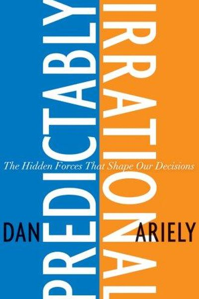

Library › Psychology & People
Predictably Irrational — Summary & Key Lessons

The hidden forces that shape our decisions — the MIT professor who proved we're all irrational, in the same ways, every time.
📖 OPEN THE FULL INTERACTIVE BREAKDOWN →🌐 Read it in Hindi, Hinglish, Gujarati, Tamil & 22 more languages — free, with audio.
💡 The Big Idea
Dan Ariely — who survived severe burns as a teenager and turned his pain into a career studying decision-making — ran brilliant experiments that demolished the myth of the rational human. We overpay for free, get anchored by arbitrary numbers, fear losses more than we love gains, and value what we own more than what we don't. The beautiful part: our irrationality is systematic. It's predictable. And once you see the patterns, you can design around them.
🧠 The 5 Key Lessons
Lesson 1: The Anchor: Arbitrary Numbers Rule Us
The Truth About Relativity
Ariely's opening experiment: people shown a random, irrelevant number (their Social Security last two digits) then asked to bid on wine — those with high numbers bid 200%+ more. We don't have internal price meters; we anchor on whatever number is in front of us. Every price, salary and 'value' you hold is anchored somewhere — usually arbitrarily.
📖 Example: The Economist's famous pricing: online-only $59, print-only $125, both $125 — the 'decoy' print-only option made the both-option look like a steal, and sales of the combined package soared. The decoy changed the anchor, not the product. Read the full example →
⚡ Do this: Before any negotiation or purchase, write your own number FIRST — before seeing their number, their 'discount,' or their comparison table.
Lesson 2: The Cost of Zero: Free Makes Us Forget
The Cost of Zero Cost
Ariely's experiments on 'free': when a chocolate was 1 cent and another 2 cents, most chose quality; when both dropped to free and 1 cent, the crowd stampeded to the FREE one — even though the relative deal was identical. Free short-circuits our reasoning: it removes the fear of loss entirely, so we take things we don't need and skip things we do.
📖 Example: Amazon's 'free shipping over $25' phenomenon: people add unneeded items to hit the free threshold, and Ariely's data showed many would rather get free shipping on a cheaper item than pay small shipping on a better one. Free is a magic word — use it knowingly. Read the full example →
⚡ Do this: Every time 'FREE' appears in your path, ask: 'Would I want this if it cost ₹100?' If not, you're being herded — walk away.
Lesson 3: The Endowment Effect: Why We Overvalue What We Own
The High Price of Ownership
Ariely's experiments: people given a mug suddenly valued it 2x more than people who could buy it — and demanded 2x more to give it up. Ownership changes our perception: we fall in love with what we have (the 'instant endowment'), we focus on what we'd lose rather than gain, and we overvalue our own ideas, possessions and decisions. This is why 'selling' anything is so hard — including your bad ideas.
📖 Example: The classic mug experiment: buyers valued the mug at ~$3, owners demanded ~$7 — and the gap is instant, forming in seconds of ownership. In life: we cling to old habits, bad stocks and sunk-cost projects because they're OURS. Read the full example →
⚡ Do this: Before keeping, selling or defending anything, ask: 'If I didn't own this, would I buy it today at this cost?' If not, it's the endowment effect talking.
Lesson 4: Loss Aversion: Losing Hurts Twice as Much as Winning Feels Good
The Pain of Loss
Ariely's research on emotion: losses loom roughly twice as large as equivalent gains. This single bias explains market panics, bad breakups, gambling addiction and why we hold losing positions: the pain of realizing a loss is so sharp we'd rather gamble on recovery. Understanding the asymmetry lets you spot when fear of loss — not logic — is driving a decision.
📖 Example: In experiments, people rejected fair coin flips that offered even odds ('double or nothing') — because the pain of losing ₹500 outweighed the joy of winning ₹500. In markets, this is why investors sell winners too early and hold losers too long. Read the full example →
⚡ Do this: Find one decision you're avoiding because of potential loss. Reframe it: 'If I made this decision for a friend, would I advise it?' The distance removes the asymmetry.
Lesson 5: The Context Trap: We Compare, Not Value
The Truth About Relativity
Humans rarely evaluate anything in absolute terms — we evaluate in comparison. Ariely shows how the same product's appeal changes completely depending on what sits next to it. This is why 'premium' versions exist (to make the mid-tier look good), why we compare salaries with colleagues, and why the 'deal' framing controls our choices.
📖 Example: Ariely's dating experiment: people rated the same photos as more attractive when a slightly-less-attractive version sat beside them — comparison created the perception. Every 'good deal' you've ever felt was partly manufactured by what it was compared to. Read the full example →
⚡ Do this: When evaluating any option, list its alternatives BEFORE looking at the presentation. Compare on your own terms, not the frame you're handed.
✅ 5-Step Action Plan
- Write your number first in every negotiation or price situation.
- Ask 'would I want it at ₹100?' whenever FREE appears.
- Use the 'would I buy it today?' test against ownership bias.
- Run your loss-averse decisions through the friend-advice test.
- Compare on your own terms — build your alternatives list first.
⚠️ When This Doesn't Work
Ariely's catalogue of our irrational patterns is fun — and it's the exact manual Charles Ponzi used to fleece Boston in 1920 and every Ponzi since has used to fleece everyone else. Knowing the biases is not immunity; Ponzi's marks were educated, and each one believed they were the exception who'd spotted the pattern. The book can become a party trick — 'see how irrational you are!' — while you quietly make the same mistakes on bigger numbers. The rational move isn't cleverness; it's friction: slow down anything involving money and promises.
💀 The Graveyard Proves It
📮 Charles Ponzi — The Man Who Named the Scheme. Burn: $20M (1920 dollars). Read the full case study →
💬 Best Quotes from Predictably Irrational
- “We are pawns in a game whose forces we largely fail to comprehend.”
- “Free! gives us an irrational thrill — we forget the true cost of things when they're free.”
- “We don't value things; we value the comparison to other things.”
Interactive version: mark lessons as read, listen in your language, share quote cards.